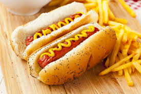
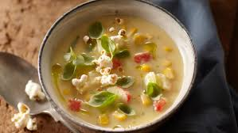
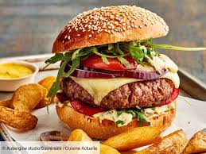
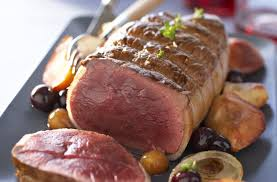

Pour les américains, le petit dejeuner est un repas très important. Contrairement aux petits dejeuner typique français, les américains mangent aussi des aliments salés.
Par exemple, du côté salé du petit déjeuner,ils mangent des oeufs brouilés ou encore des gauffres salées a l'oeuf poché et au bacon. Du côté sucré de leur petit déjeuner, ils mangent des pankakes amériacains ou encore es muffins aux mirtilles
Contrairement à l'Europe, le déjeuner n'est pas le repas principale de la journée. L'amerique qui suivait un rythme plus agricole, négligeait le reoas du midi. Il n'a été pendant longtemps qu'une collation. Les entreprises restent souvent ouverte toute la journée et laisse seulement qu'une brève pause pour ce repas. Pendant le déjeuner,les Americains mangent des repas très simple comme des hotdogs, des soupes
 Le diner est le repas le plus important de la journée. C'est un repas souvent plus élaborer que le dejeuner. On peut y trouver un peu de tout comme des burger, des pâtes, des viandes en rôtie ect...Le vin et l'acool sont généralement absents lors de ce repas car il est inhabituel de boire devant les enfants hors de grandes occasions
 >La cuisine américaine est extremement diversifiée et difficile à définir, les Etats-Unis ont attiré des immigrants du monde entier, ce qui a amener la diversité des saveurs dans les plats américains.
source: clique ici